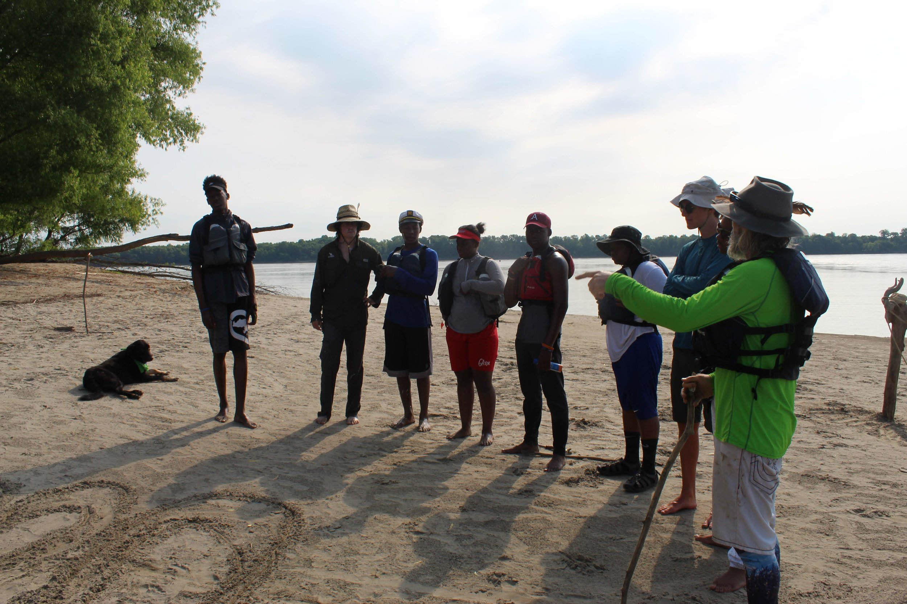
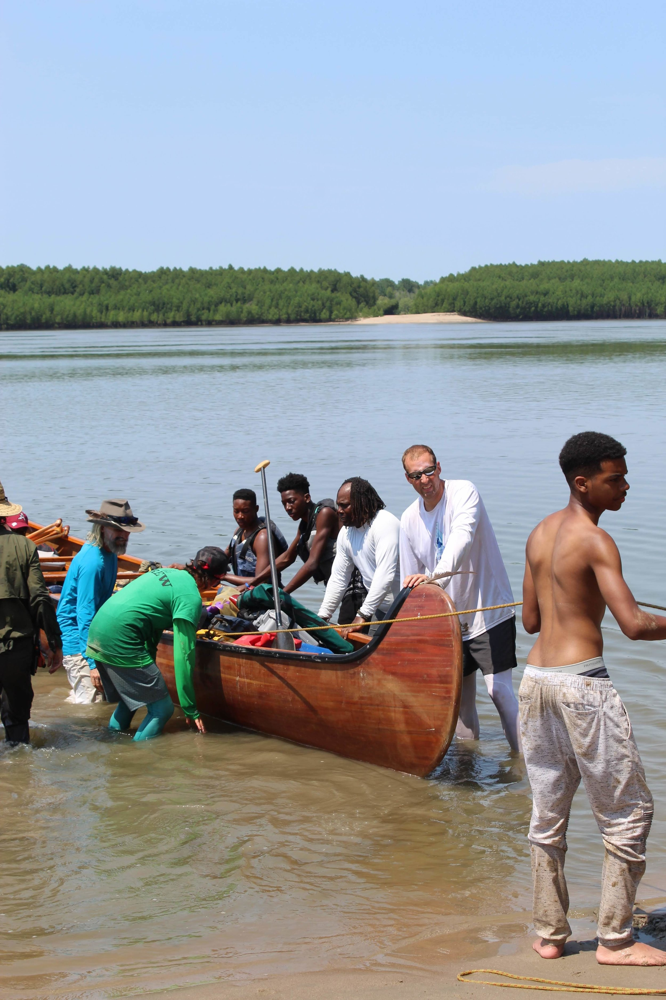

Island 69 to Smith Point

We started our day by celebrating Quiet Coyote's birthday! We couldn't take him to get his license but we did let him steer the boat today!
We packed up camp quickly and took some time to practice rescuing people using throw ropes, a skill that came in handy when one of our campers staged a drill as we were enjoying our snack break.

We only did a short paddle to Smith Point and set up our last campsite. We spent a very hot afternoon in the water while some of the group went to explore a back channel of the Island.
We knew that today was our last day and it felt bittersweet. Sweet because we hit our stride as a crew. The leaders didn't need to give directions anymore, the students were able to take the lead in the boats and in camp. But it is also bitter because we know tomorrow we go back to the real world.

Our six brave students named themselves Genesis because they are the first group to complete this camp. It has a deeper meaning than that though, they are the beginning of something.
Tomorrow we will be back in the real world, but we are taking the river with us.